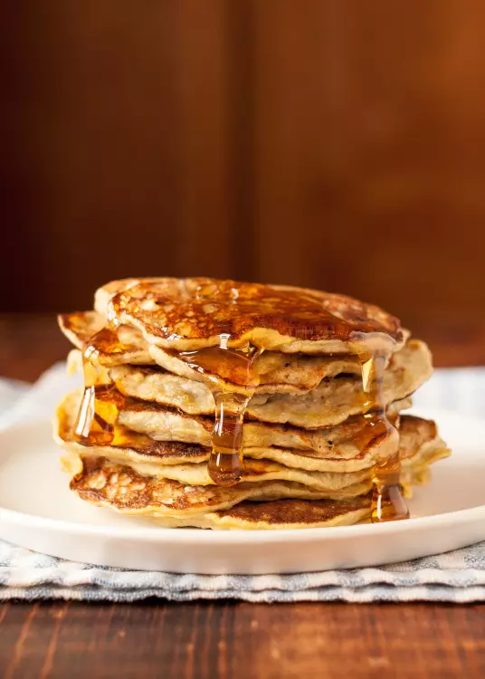
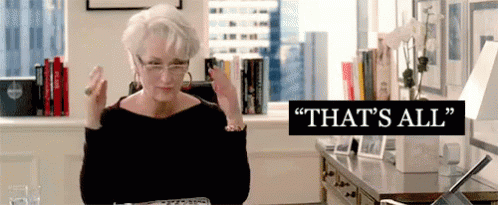

Why waste calories on regular pancakes when you can make banana pancakes instead!

Click on the pancakes to begin
Banana pancakes are super easy to make and only need a few ingredients so open your pantry/fridge grab some bananas, eggs, coconut flakes (optional), a cooking oil of your choice, maple syrup, and then you're ready to go!
Using a fork, mash bananas into a medium bowl until the banana has a smooth batter-like consisitency.
Once your bananas are all mashed up, add 2 eggs to finish off the batter. It will be very liquidy! Don't worry, that's normal. For those of you who like fluffier pancakes, add 1 tablespoon of coconut flakes which will thicken the batter and give pancakes a fluffier consisitency.
Heat a pan with the cooking oil of your choice on medium heat, and then drop some batter into the pan and start cooking. Cook for about a minute or until the batter starts bubbling and the edges look brown. Then flip the pancake and cook it again.
Once your pancakes are cooked pour some maple syrup on your banana pancake stack and enjoy!
Thanks for visiting this tutorial!
Come back soon!
